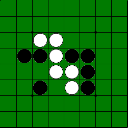

Reglas Othello
Los movimientos consisten en incorporar fichas al tablero a razón de una por turno,
nunca en desplazar fichas de las que ya estuvieran sobre el tablero.
Las incorporaciones deberán hacerse en orden a las siguientes normas:
Sólo podrá incorporarse una ficha flanquendo a una o varias fichas contrarias.
Por flanquear se entiende el hecho de colocar la nueva ficha en un extremo
de una hilera de fichas del color del contrario (una o más fichas)
en cuyo extremo opuesto hay una ficha del color de la que se incorpora, sin
que existan casillas libres entre ninguna de ellas. Esta hilera puede
ser indistintamente vertical, horizontal o diagonal. De este modo, las fichas
del contrincante quedan encerradas entre una que ya estaba en el tablero y la nueva ficha.
Cada vez que un jugador incorpora una ficha, y por lo tanto encierra a otras del
contrario, debe dar la vuelta a las fichas encerradas convirtiéndolas así en propias.
Si en una sola incorporación se provocase esta situación de flanqueo en más de una línea,
se voltearán todas las fichas contrarias que estuvieran implicadas en cada uno de los flanqueos.
Si no fuera posible para un jugador encerrar a ninguna ficha, deberá pasar en su turno,
volviendo el mismo a su oponente.
La partida finaliza cuando todas las casillas del tablero son ocupadas o ninguno de los 2 jugadores
tiene posibilidad de incorpar una nueva ficha.
En cualquier caso vence el jugador que tiene más fichas sobre el tablero.
Puede darse el caso de empate si el número de fichas de cada color al acabar la partida es el mismo.
